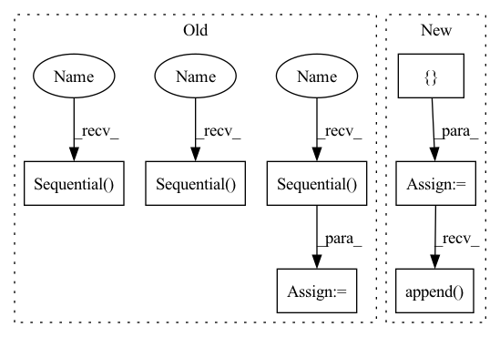

Pattern ID :122
Before Change
fc_layer = nn.Sequential(nn.Dropout(), nn.Linear(256, num_classes))
self._init_fc(fc_layer)
self.branches = nn .Sequential()
for stripe_id, stripe in enumerate(stripes):
branch = nn.Sequential()
branch.add_module("branch_backbone", nn.Sequential(copy.deepcopy(res_conv4), copy.deepcopy(resnet.layer4)))
branch.add_module("branch_pool", pool2d(kernel_size=(24 // stripe, 8)))
branch_reduces, branch_stripe_fc = nn.Sequential() , nn.Sequential()
for i in range(stripe + 1): // global + local
branch_reduces.add_module(str(i), copy.deepcopy(reduction))
branch_stripe_fc.add_module(str(i), copy.deepcopy(fc_layer))
branch.add_module("branch_reduce", branch_reduces)After Change
fc_layer = nn.Sequential(nn.Dropout(), nn.Linear(256, num_classes))
self._init_fc(fc_layer)
branches = []
for stripe_id, stripe in enumerate(stripes):
embedding_layers = nn.ModuleList([copy.deepcopy(reduction) for _ in range(stripe+1)])
fc_layers = nn.ModuleList([copy.deepcopy(fc_layer) for _ in range(stripe+1)])
branches.append(
nn.ModuleList([
nn.Sequential(copy.deepcopy(res_conv4), copy.deepcopy(resnet.layer4)),
embedding_layers, fc_layers])
)
self.branches = nn.ModuleList(branches)
@staticmethod
def _init_reduction(reduction):In pattern: SUPERPATTERN
Frequency: 3
Non-data size: 7
Instances Fragment ID: 575272
Project Name: tencentyouturesearch/personreid-cacenet
Commit Name: c08b75174cf03f3eb1fd83052bcd9e8d292b2dda
Time: 2020-05-17
Author: fufuyu@tencent.com
File Name: models/mgn.py
M Class Name: MGN
N Class Name: MGN
M Method Name: __init__(3)
N Method Name: __init__(3)
M Parent Class: nn.Module
N Parent Class: nn.Module
M File Name: models/mgn.py
N File Name: models/mgn.py
M Start Line: 33
M End Line: 55
N Start Line: 31
N End Line: 45
Before Change
fc_layer = nn.Sequential(nn.Dropout(), nn.Linear(256, num_classes))
self._init_fc(fc_layer)
self.branches = nn.Sequential()
for stripe_id, stripe in enumerate(stripes):
branch = nn.Sequential()
branch.add_module("branch_backbone", nn.Sequential(copy.deepcopy(res_conv4), copy.deepcopy(resnet.layer4)))
branch.add_module("branch_pool", pool2d(kernel_size=(24 // stripe, 8)))
branch_reduces, branch_stripe_fc = nn.Sequential() , nn.Sequential()
for i in range(stripe + 1): // global + local
branch_reduces.add_module(str(i), copy.deepcopy(reduction))
branch_stripe_fc.add_module(str(i), copy.deepcopy(fc_layer))
branch.add_module("branch_reduce", branch_reduces)After Change
fc_layer = nn.Sequential(nn.Dropout(), nn.Linear(256, num_classes))
self._init_fc(fc_layer)
branches = []
for stripe_id, stripe in enumerate(stripes):
embedding_layers = nn.ModuleList([copy.deepcopy(reduction) for _ in range(stripe+1)])
fc_layers = nn.ModuleList([copy.deepcopy(fc_layer) for _ in range(stripe+1)])
branches.append(
nn.ModuleList([
nn.Sequential(copy.deepcopy(res_conv4), copy.deepcopy(resnet.layer4)),
embedding_layers, fc_layers])
)
self.branches = nn.ModuleList(branches)
@staticmethod
def _init_reduction(reduction): Fragment ID: 575273
Project Name: tencentyouturesearch/personreid-youreid
Commit Name: c08b75174cf03f3eb1fd83052bcd9e8d292b2dda
Time: 2020-05-17
Author: fufuyu@tencent.com
File Name: models/mgn.py
M Class Name: MGN
N Class Name: MGN
M Method Name: __init__(3)
N Method Name: __init__(3)
M Parent Class: nn.Module
N Parent Class: nn.Module
M File Name: models/mgn.py
N File Name: models/mgn.py
M Start Line: 33
M End Line: 55
N Start Line: 31
N End Line: 45
Before Change
self.alibi = AlibiPositionalBias(heads = heads)
self.to_q = nn.Sequential(
nn.Conv1d(dim, inner_dim, 1, bias = False),
nn.Conv1d(inner_dim, inner_dim, 3, bias = False, groups = inner_dim)
)
self.to_k = nn.Sequential(
nn.Conv1d(dim, inner_dim, 1, bias = False),
nn.Conv1d(inner_dim, inner_dim, 3, bias = False, groups = inner_dim)
)
self.to_v = nn.Sequential(
nn.Conv1d(dim, inner_dim, 1, bias = False),
nn.Conv1d(inner_dim, inner_dim, 3, bias = False, groups = inner_dim)
)
self.to_out = nn.Linear(inner_dim, dim, bias = False)
def forward(self, x):After Change
self.qkv_ds_convs = nn.ModuleList([])
for _ in range(3): // for queries, keys, values
ds_convs = nn.ModuleList([] )
for kernel_size in ds_conv_kernel_sizes:
if kernel_size == 0:
ds_convs.append( nn.Identity())
continue
ds_convs.append(CausalDepthwiseConv1d(inner_dim, kernel_size))
Fragment ID: 575274
Project Name: lucidrains/tranception-pytorch
Commit Name: b2eaf893294394093839a66effb621645d54cd6c
Time: 2022-06-12
Author: lucidrains@gmail.com
File Name: tranception_pytorch/tranception_pytorch.py
M Class Name: CausalAttention
N Class Name: CausalAttention
M Method Name: __init__(1)
N Method Name: __init__(1)
M Parent Class: nn.Module
N Parent Class: nn.Module
M File Name: tranception_pytorch/tranception_pytorch.py
N File Name: tranception_pytorch/tranception_pytorch.py
M Start Line: 90
M End Line: 109
N Start Line: 99
N End Line: 127